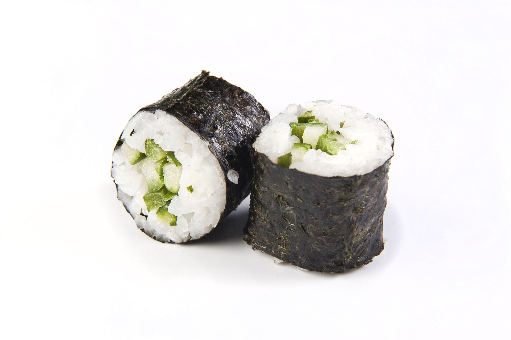

Back
Cucumber and Avocado Sushi

Description
Make avocado rolls at home with this easy vegetarian sushi recipe. Serve with wasabi, pickled ginger, and soy sauce.
Ingredients
- 1 1/4 cups water
- 1 cup uncooked glutinous white rice (sushi rice)
- 3 tablespoons rice vinegar
- 1 pinch salt
- 4 sheets nori (dry seaweed)
- 1/2 medium cucunber, sliced into thin strips
- 1 medium avocado - peeled, pitted and sliced
Directions
Steps
- Combine water and rice in a saucepan and bring to a boil. Cover, reduce the heat to low, and simmer until rice is tender and water has been absorbed, about 20 minutes. Remove from the heat, stri in vinegar and salt, and set aside to cool for at least 5 minutes.
- Cover a bamboo sushi mat with plastic wrap to keep rice from sticking. Place one nori sheet over the plastic. Spread rice evenly onto nori sheet, leaving about a 1/2 inch uncovered at the bottom. Arrange cucumber and avocado acrodd the center of the rice. List the mat, roll over cucumber and avocado once, and press down. Unroll, then roll again rowards the uncovered end of the nori to make a long roll. Seal roll with a little water if neccessary. Repeat to make remaining rolls.
- Use a sharp, wet knife to slice each roll into 6 pieces.
Recipe Tip
You can add either fake crab to keep the suchi rolls vegetarian or smoked salmon if you perfer.
Nutrition Facts (per serving)
- Calories 171
- Fat 5g
- Carbs 29g
- Protein 3g